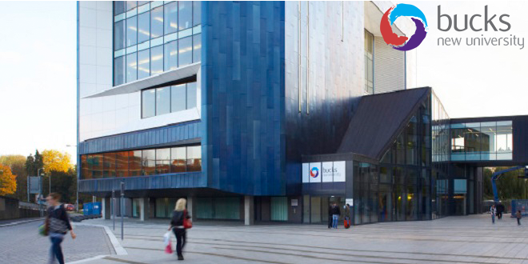

Acasă
Acasă Țări
Țări Catalog
Catalog Galerie foto
Galerie foto Experiente
Experiente Despre
DespreBuckingamshire New University



Descriere
Bucks New University este o universitate moderna, cu o experienta in educatie de peste 120 de ani. Cursurile ei unice si locatia fantastica ofera studentilor un excelent mediu de invatare. Cursurile universitatii includ Nursing, Air Transport Management with Commercial Pilot Training, Games Development, Event Management, Sport Management, Aviation, 3D Animation si Social Sciences. Campusul High Wycombe este la doar 40 min. cu trenul fata de Londra si la 30 min. cu masina fata de Heathrow si Oxford.
In ultimii ani, universitatea a investit peste 60 milioane de lire sterline in dotari, inclusiv in propriul simulator de zbor. Academicienii activeaza in industrie, ceea ce ofera un plus studentilor, acestia fiind pregatiti pentru piata muncii. Uniunea Studentilor este premiata si campusurile universitatii sunt clasate in top 10 pentru cele mai sigure din UK. Bucks este un oras centru universitar mic, cu o atmosfera prietenoasa, gazduind studenti din toata lumea.
Informații generale
Tara: Marea Britanie
Limba de predare: engleza
Ani de studiu: Programe de licen?ă – 3 ani; Programe de master – 18 luni (full-time) sau 2 ani (part-time)
Inceput an: Programe de licen?ă: Septembrie Programe de master: Ianuarie, Februarie ?i Septembrie
Burse: Da
Campusuri: High Wycombe ?i Uxbridge
Aeroporturi: Heathrow (35 min.); Gatwick (1 oră 20 min.); Luton (1 oră), Stanstead (1 oră)
Cazare: taxe pentru 2018/2019: 105-174£ /saptamana
Programe universitare:
Accounting and Finance
Advertising Mgmt. and Digital
Communications
Air Transport with Commercial
Pilot Training
Air Transport with Helicopter
Pilot Training
Air Transport with Private Pilot
Training
Airline and Airport Mgmt.
American Sports Business
Mgmt.
Animation and Visual Effects
Applied Social Sciences
Business and Finance
Business and Human Resource
Mgmt.
Business and Marketing Mgmt.
Business Law
Business Mgmt.
Computing
Computing and Web Development
Creative Advertising
Creative Writing for Publication
Criminological Psychology
Criminology
Dance and Performance
Event and Festival Mgmt.
Event and Festivals Technology
Events and Festivals Sustainability
Mgmt.
Fashion Design
Film and TV Production
Games Development
Graphic Arts
Graphic Design
Hospitality Business Mgmt.
Illustration
International Business
International Football Business
International Tourism Mgmt.
with Air Travel
International Travel and
Tourism Mgmt.
Law
Marketing
Music & ; Live Events Mgmt.
Music Business
Music Business and Brand Marketing
Music Performance Mgmt.
Nursing
Performing Arts
Police Studies and Criminal
Justice
Product Design
Psychology
Psychology and Criminology
Public Relations and Marketing
Communications
Software Engineering
Programe de master:
International Accounting and Finance
MBA
MBA International
Psychotherapeutic Approaches in Mental Health (Part-time)
Health Exercise and Wellbeing
Community Health Care Nursing (Community Children's and District Nursing) (Part-time)
Advanced Practice
Cognitive Behavioral Therapy
Criminology Communities and Disorder
Human Resource Mgmt.
Child and Adolescent Studies
Nursing
Psychosocial Interventions
Organizational Resilience
3D Animation
Leadership and Mgmt.
Child Protection and Adult Safeguarding
Applied Positive Psychology
Art and Design Practice
Specialist Community Public
Health Nursing
Performing Arts
MBA Online Executive
Cognitive Behavioural Therapy
Marketing Communications
Health Rehab. and Exercise
Technology-enhanced Learning